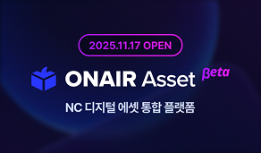
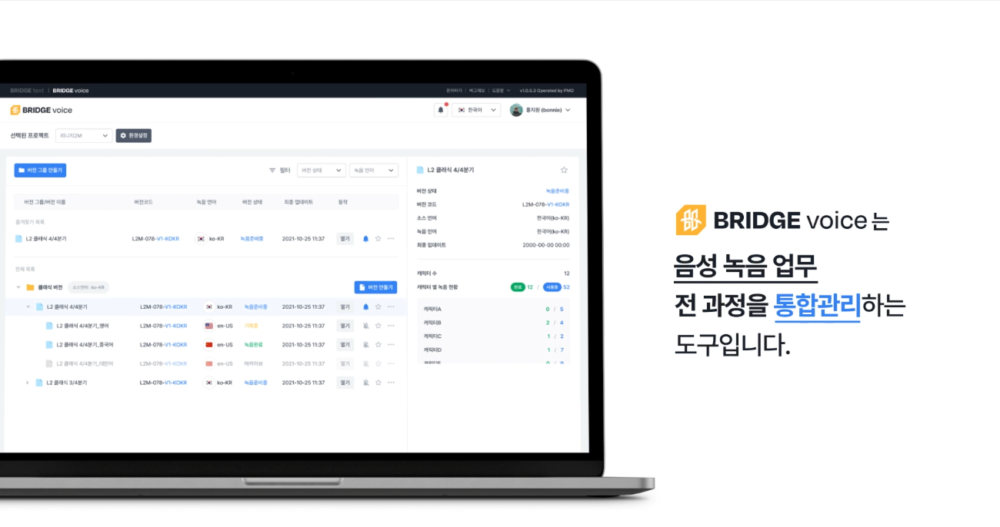
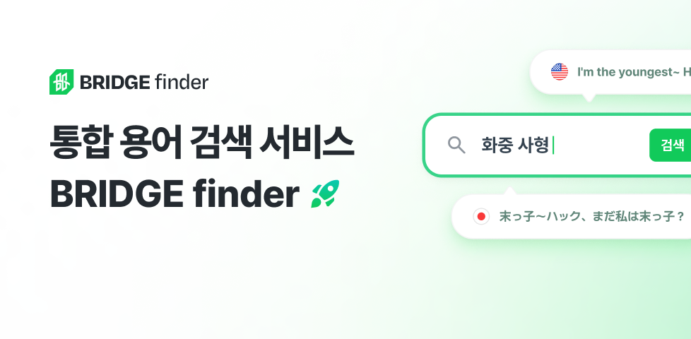
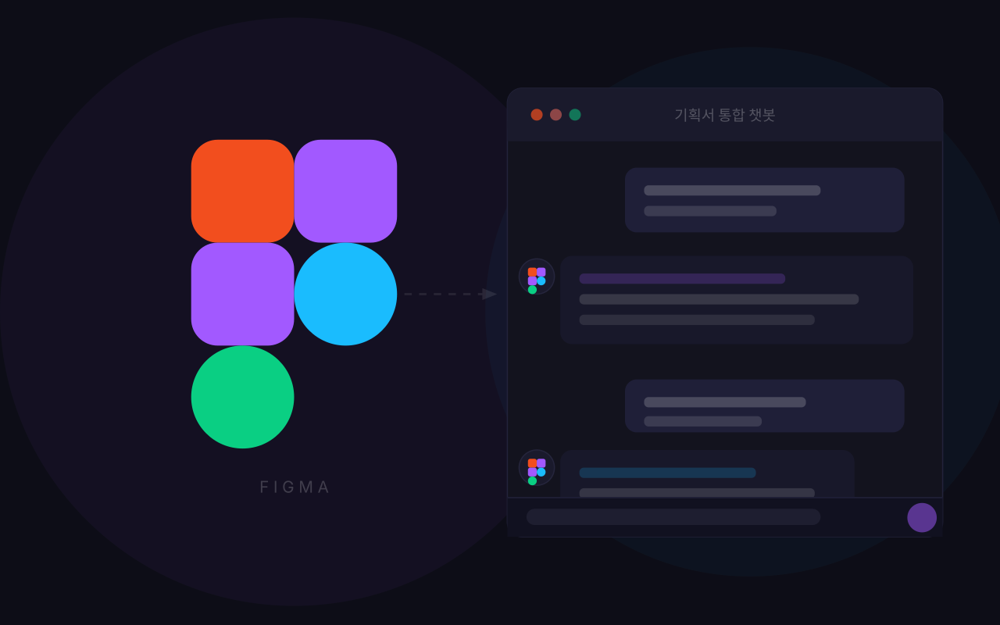
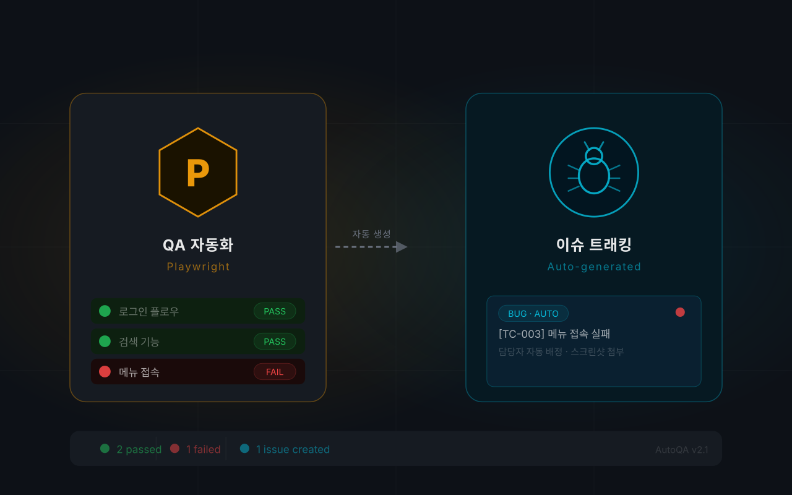

2026ONAIR Asset 베타
디지털 자산 통합 관리 플랫폼
처음 접하는 도메인에서도 인터뷰와 데이터로 구조화해온 서비스 기획자 박태호입니다. 사내 플랫폼 3종을 출시하고 운영해온 경험으로, 이제는 더 많은 외부 사용자가 직접 쓰는 서비스를 기획해보고 싶습니다.
Indiana University Bloomington
컴퓨터정보공학 · 부전공 경영학
2014.08 — 2019.05 · GPA 4.03 / 4.5
Career
AX지원실 | 서비스 기획
Skills
태그에 마우스를 올리면 숙련도를 확인할 수 있어요Product
Data
Communication

2026디지털 자산 통합 관리 플랫폼

2025성우 녹음 제작 관리 + AI 공정 자동화

2024용어 관리 표준 플랫폼
Side Projects

Figma 기획서 기반 LLM 검색 도구

자동화 QA 및 이슈 트래킹 도구
PRINCE2 Foundation
APMG | 2022.07 취득